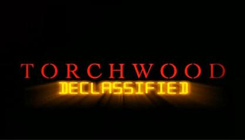

Torchwood Declassified
Assim como Doctor Who, Torchwood teve uma série companheira: Torchwood Declassified, que também acompanhou os bastidores e mudanças na série. Se em suas duas primeiras temporadas Declassified era produzida e transmitida na mesma frequência da série principal em episódios de 10-15 minutos, nas duas últimas foi lançada exclusivamente para Home Video, concentrada em cerca de um episódio por temporada, com cerca de 30 minutos cada. Nenhum dos episódios de Torchwood Declassified possui legenda em português e estão disponíveis nos respectivos posts de cada temporada.
Torchwood contém cenas de sexo e violência, portanto, não é recomendada para crianças.
Créditos das imagens e Textos: Os Mestres de Luxor
Assim como Doctor Who, Torchwood teve uma série companheira: Torchwood Declassified, que também acompanhou as mudanças na série. Se em suas duas primeiras temporadas Declassified era produzida e transmitida na mesma frequência da série principal em episódios de 10-15 minutos, nas duas últimas foi lançada exclusivamente para Home Video, concentrada em cerca de um episódio por temporada, com cerca de 30 minutos cada. Nenhum dos episódios de Torchwood Declassified possui legenda em português.
1ª Temporada
xx.Welcome to Torchwood (Preview)
01.Jack’s Back (Everything Changes)
02.Bad Day at the Office (Day One)
03.Living History (Ghost Machine)
04.Girl Trouble(Cyberwoman)
05.Away with the Fairies(Small Worlds)
06.The Country Club (Countrycide)
07.There’s Something About Mary (Greeks Bearing Gifts)
08.Beyond the Grave (They Keep Killing Suzie)
09.Dead Man Walking (Random Shoes)
10.Time Flies (Out of Time)
11.Weevil Fight Club (Combat)
12.Blast from the Past (Captain Jack Harkness)
13.To the End (End of Days)
2ª Temporada
01.Home and Hart (Kiss Kiss, Bang Bang)
02.Sleepless in Cardiff (Sleeper)
03.Step Back in Time (To the Last Man)
04.Save the Whale(Meat)
05.Past Imperfect (Adamn)
06.Animal Pharm (Reset)
07.Death Defying (Dead Man Walking)
08.Dead Eyes Open (A Day in the Death)
09.Something New (Something Borrowed)
10.In Living Colour (From Out of the Rain)
11.Quid Pro Quo (Adrift)
12.Clean State (Fragments)
13.Avulsion (Exit Wounds)
3ª e 4ª Temporadas
xx.Cracking Children of Earth(Children of Earth)
xx.Behind the Scenes (Miracle Day)
xx.FX Special on Miracle Day (Miracle Day)